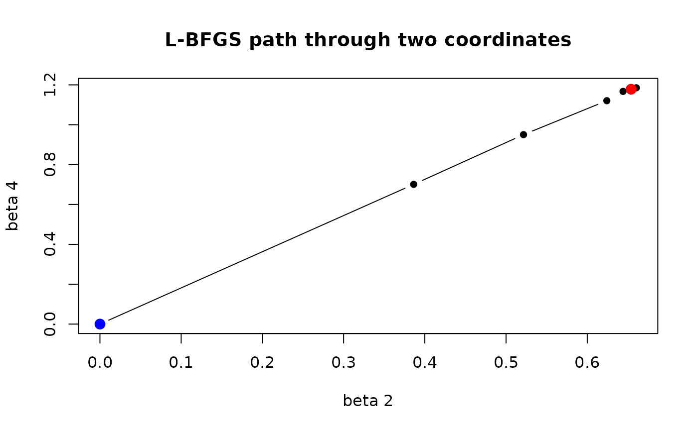

Logistic Regression with L-BFGS, Recording the Optimizer's Path
Source:R/RcppExports.R
logistic_reg_lbfgs_path.RdSolves logistic regression as logistic_reg_lbfgs() does, and returns
every point the optimizer visited on the way rather than the fit alone.
Value
A matrix with one row per coefficient and one column per recorded point.
The first column is the starting point, a vector of zeros, and each column
after it holds the coordinates following one accepted step. The last column
is the fit, and matches what logistic_reg_lbfgs() returns for the same
arguments to within the optimizer's tolerance.
Coefficients run down the rows and iterations run across the columns, so
two coordinates can be traced against each other with
plot(path[2, ], path[4, ]).
Details
The objective, its gradient, the starting point and the optimizer settings
are those of logistic_reg_lbfgs(), which documents them. The only
addition is an ens::L_BFGS callback that copies the coordinates into a
matrix each time the optimizer moves.
A callback in 'ensmallen' is a plain class that defines whichever of the
documented hooks it needs; the library detects them at compile time. This
one uses BeginOptimization() for the starting point, StepTaken() for
each accepted step, and EndOptimization() for the point the run finished
on. Callbacks are passed as trailing arguments to Optimize().
The column count is not fixed. L-BFGS stops once the gradient norm falls below its tolerance or the objective stops improving, so the number of steps depends on the data. A point that repeats the previous one is not recorded twice.
Examples
# Number of Points
n = 1000
# Select beta parameters
beta = c(-1, 0.7, -0.5, 1.2)
# Number of Predictors (including intercept)
p = length(beta)
# Generate predictors from a normal distribution
X_i = matrix(rnorm(n * (p - 1)), ncol = p - 1)
# Add an intercept
X = cbind(1, X_i)
# Generate binary responses
y = rbinom(n, size = 1, prob = 1 / (1 + exp(-X %*% beta)))
# Record the path L-BFGS takes
path = logistic_reg_lbfgs_path(X, y)
# One row per coefficient, one column per recorded point
dim(path)
#> [1] 4 10
# The last column is the fit
cbind(actual = beta,
path = path[, ncol(path)],
lbfgs = drop(logistic_reg_lbfgs(X, y)))
#> actual path lbfgs
#> [1,] -1.0 -0.8906717 -0.8906717
#> [2,] 0.7 0.6540078 0.6540078
#> [3,] -0.5 -0.4641972 -0.4641972
#> [4,] 1.2 1.1780839 1.1780839
# Trace two coefficients against each other
plot(path[2, ], path[4, ], type = "b", pch = 16,
xlab = "beta 2", ylab = "beta 4",
main = "L-BFGS path through two coordinates")
# Mark where the run started and where it ended
points(path[2, 1], path[4, 1], col = "blue", pch = 16, cex = 1.5)
points(path[2, ncol(path)], path[4, ncol(path)],
col = "red", pch = 16, cex = 1.5)
